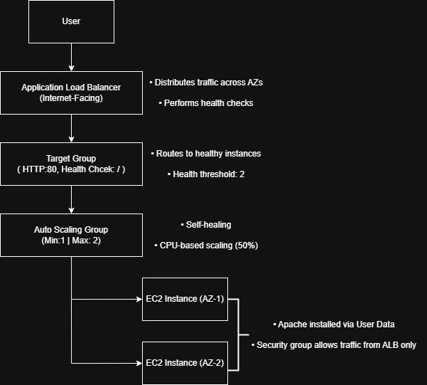
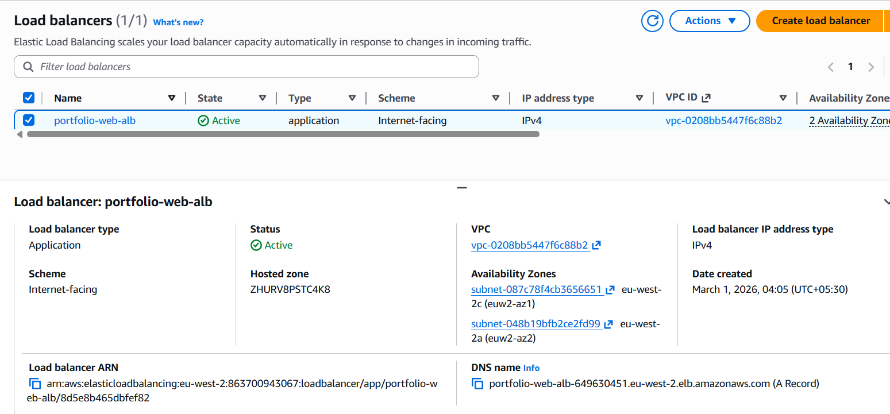
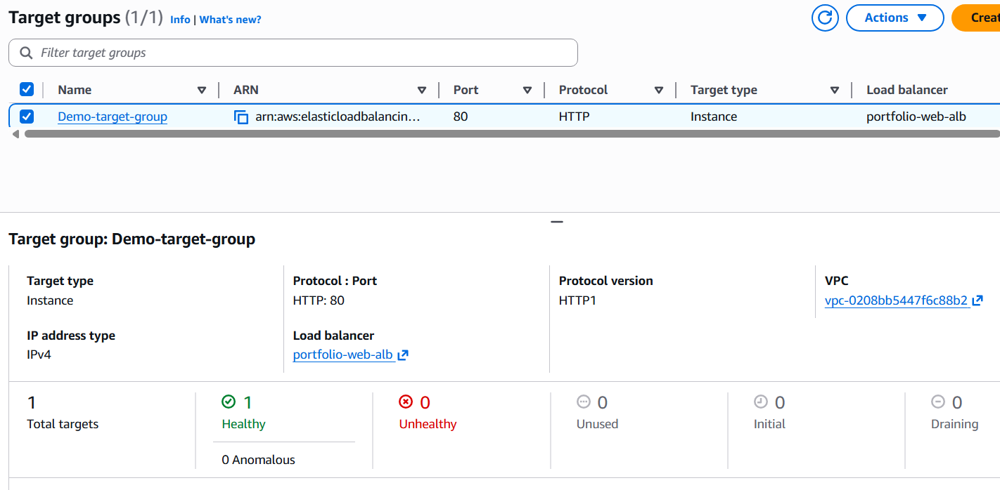
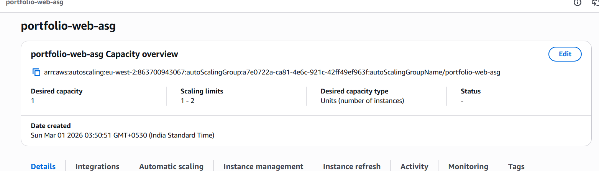
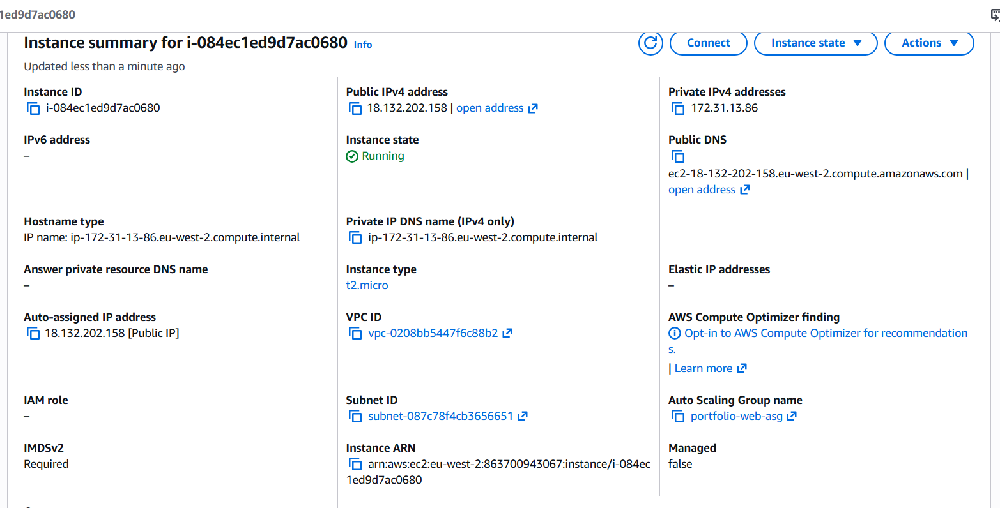
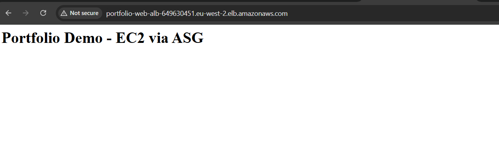

High Availability 3-Tier SaaS Architecture
Designed and deployed a production-style high availability web architecture
using Application Load Balancer, Auto Scaling Group, and Multi-AZ
compute distribution. The system was built to tolerate instance failure,
distribute traffic across availability zones, and validate self-healing behavior.
Objective
Build a resilient, scalable web infrastructure that:
- Distributes traffic across AZs
- Performs health checks
- Replaces failed instances
Architecture Overview
Traffic flow:
User → Internet-Facing ALB → Target Group (HTTP:80 Health Check) →
Auto Scaling Group → EC2 Instances (AZ-1 & AZ-2)
- Application Load Balancer deployed across 2 AZs
- Target Group configured with health check path: "/"
- Health threshold: 2 successful checks
- Auto Scaling Group capacity: Min 1 | Max 2
- CPU-based scaling policy at 50%
Infrastructure Components
Application Load Balancer
- Type: Application
- Scheme: Internet-facing
- IPv4 enabled
- Attached to public subnets across 2 AZs
- Routes traffic only to healthy targets
Target Group
- Protocol: HTTP
- Port: 80
- Target Type: Instance
- Health check path: "/"
- Observed healthy target before routing live traffic
Auto Scaling Group
- Min Capacity: 1
- Max Capacity: 2
- Desired Capacity: 1
- Balanced AZ distribution
- CPU Target Tracking Policy (50%)
EC2 Launch Template
- Amazon Linux
- Instance Type: t2.micro
- User Data for automated Apache installation
- Security group allows traffic only from ALB
- No direct public inbound access
Instance Bootstrapping (User Data)
#!/bin/bash
yum update -y
yum install httpd -y
systemctl start httpd
systemctl enable httpd
echo "Portfolio Demo - EC2 via ASG" > /var/www/html/index.html
This ensures immutable provisioning — each instance launches
fully configured without manual intervention.
Validation & Failure Testing
Traffic Validation
- Accessed ALB DNS endpoint
- Confirmed Apache page rendered successfully
- Verified target health status in Target Group
Self-Healing Test
- Manually terminated running EC2 instance
- ASG detected unhealthy state
- Replacement instance launched automatically
- Target group marked new instance healthy
- No manual traffic rerouting required
Scaling Strategy
- Target tracking scaling policy based on CPU utilization
- Threshold: 50%
- Prevents over-provisioning
- Maintains availability during traffic spikes
Security Design
- Instances deployed in private subnets
- Security Group chaining (ALB → EC2 only)
- No open SSH access required for validation
- Public access abstracted via ALB only
Screenshots & Evidence






Outcome
Successfully implemented a highly available, self-healing,
horizontally scalable web architecture using AWS managed services.
The infrastructure was validated under failure simulation
and confirmed to automatically recover without manual intervention.